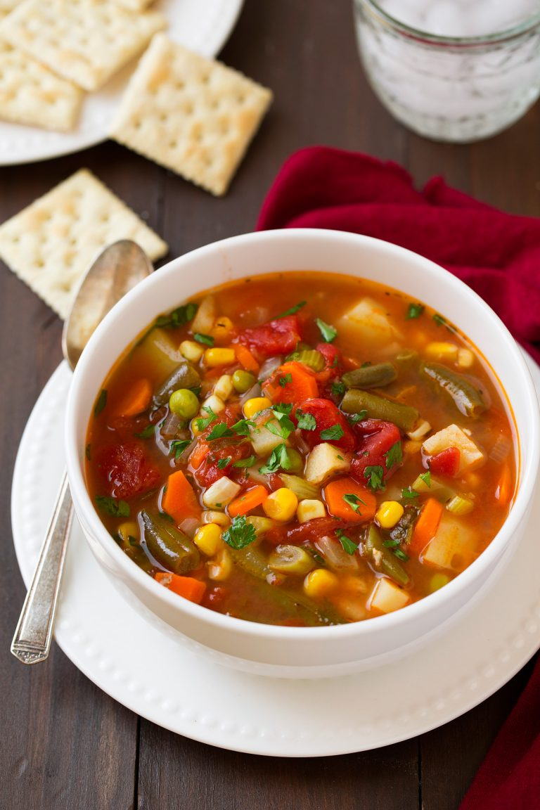

Description
This is the soup dreams are made of. *chefs kiss*
I love making this soup and if it weren't for the cries of my children, id make it every day
Whats up with that? I'd kill to eat veggie soup every day back when i was a kid
Back then all we got to eat was steel-cut oats with cinnamon, hold the sugar
I'd spend half the day sitting at the diner table trying to choke that slop down
But back to the soup, this sh*ts the bomb!
Ingredients
- 2 Tbsp olive oil
- 1/2 cups chopped yellow onion
- 2 cups peeled and chopped carrots
- 1 1/4 cups chopped celery
- 4 cloves garlic, minced
- 4 (14.5 oz) cans low-sodium chicken broth or vegetable broth
- 2 (14.5 oz) cans diced tomatoes, undrained
- 3 cups peeled and 1/2-inch thick diced potatoes
- 1/3 cup chopped fresh parsley
- 2 bay leaves
- 1/2 tsp dried thyme, or 1 Tbsp fresh thyme leaves
- 1 1/2 cups chopped frozen or fresh green beans
- 1 1/4 cups frozen or fresh corn
- 1 cup frozen or fresh peas
- Kosher salt and freshly-cracked black pepper, to taste
Steps
- Heat olive oil in a large pot over medium-high heat.
- Add onions, carrots, and celery and saute 4 minutes then add
garlic and saute 30 seconds longer.
- Add in broth, tomatoes, potatoes, parsley, bay leaves,
thyme and season with salt and pepper to taste.
- Bring to a boil, then add green beans.
- Reduce heat to medium-low, cover and simmer until potatoes
are almost fully tender, about 20 - 30 minutes.
- Add corn and peas and cook 5 minutes longer. Serve warm.